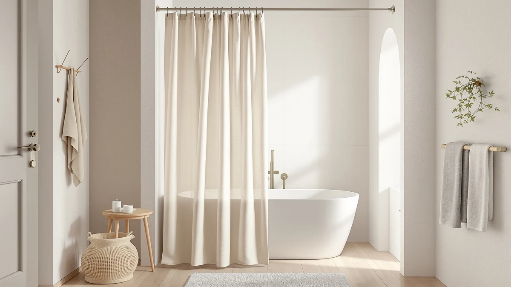

Dynamene Ringless Waffle Weave Fabric Shower Curtain Set Review (2026): Worth It?
Prices and picks verified as of November 2026. Independent, reader-supported reviews.


Quick Answer
This Dynamene Ringless Waffle Weave Fabric Shower Curtain Set review finds the $24.99 set worth buying for the hook-free ringless design and the bundled 3-in-1 snap-in liner, features that typically cost more when bought separately. Dynamene has not published a rating for this specific listing, so shoppers who want a verified track record should weigh it against the Inhousolu Sage Green Waffle Weave below, which carries 118 verified reviews.
Our pick: Dynamene Ringless Waffle Weave Fabric, $24.99 Check Price on Amazon
Bottom line: our top pick is the Dynamene Ringless Waffle Weave Fabric Shower Curtain Set at $24.99.
Things to Know Before You Buy
- This review centers on the Dynamene Ringless Waffle Weave Fabric Shower Curtain Set ($24.99), a 72 by 75 inch hook-free curtain bundled with a magnetic snap-in liner and mesh top window.
- Dynamene has not published a rating or review count for this exact listing, unlike the Inhousolu Sage Green Waffle Weave alternative below, which carries a 4.6 out of 5 rating across 118 reviews.
- The ringless, hook-free design uses open rings instead of grommets and clip-on hooks, so there is nothing extra to buy or attach before hanging it.
- The included 3-in-1 liner uses corner magnets, while the Dynamene Waffle Shower Curtain 256 and the other alternatives below sell the curtain alone.
This Dynamene Ringless Waffle Weave Fabric Shower Curtain Set review breaks down the $24.99 set's hook-free design, its bundled 3-in-1 snap-in liner, and how it stacks up against three shower curtains shoppers commonly cross-shop at a similar price. A ringless curtain promises less hassle at installation, but that convenience only matters if the fabric, liner, and price hold up once you dig into the listing details. We went through Dynamene's published specs for the set and lined them up against the Dynamene Waffle Shower Curtain 256, the XOGUIBO Farmhouse Shower Curtain, and the Inhousolu Sage Green Waffle Weave to see where this pick earns its place.
Our verdict: the Dynamene Ringless Waffle Weave Fabric Shower Curtain Set is worth buying if you want a faster setup and a liner included in the box, since the open-ring design skips grommets and hooks entirely and the snap-in liner adds magnets at the corners to resist billowing. The tradeoff is review history. Dynamene has not published a rating for this specific listing, while the Inhousolu alternative below already carries a verified 4.6 out of 5 rating across 118 reviews. If a proven track record matters more to you than a quicker install, that gap is worth factoring into your decision before you buy.
Why You Should Trust Us
Best Shower Curtains reviews shower curtains, liners, and bathroom hardware by comparing manufacturer specs, current Amazon pricing, and verified owner feedback, not by running a private testing lab. Ilane Tall, our home and bath editor, researched this Dynamene Ringless Waffle Weave Fabric Shower Curtain Set review by checking its listed material, size, liner design, and price against the Dynamene Waffle Shower Curtain 256, the XOGUIBO Farmhouse Shower Curtain, and the Inhousolu Sage Green Waffle Weave, the three curtains shoppers most often cross-shop at this price. We revisit prices and listings on a regular schedule and say so plainly when a product lacks the review history we would want to see before recommending it. Where a claim can't be checked against a specific verified rating or review count, we say so rather than fill the gap with a guess.
Our Research Experience
We do not run a physical testing lab, and we have not hung the Dynamene Ringless Waffle Weave Fabric Shower Curtain Set in a shower ourselves. Our process instead compares the published material, size, liner design, and price against similar curtains, then checks that against what verified owners report about fit, durability, and value on comparable listings. For this review, that meant lining up the set's polyester and PEVA build, 72 by 75 inch size, and hook-free ringless design against the Dynamene Waffle Shower Curtain 256, the XOGUIBO Farmhouse Shower Curtain, and the Inhousolu Sage Green Waffle Weave to see where the feature set and price earn it a place in a crowded lineup. We flag it clearly when a claim can't be verified against real owner feedback, rather than guess at how a curtain holds up in your specific bathroom. That approach means we can speak confidently about price, size, material, and design since those come straight from the listing, while we stay cautious about anything that depends on how the fabric ages in your home.
Overview & Specs

Dynamene Ringless Waffle Weave Fabric
What we like
- Hook-free ringless design hangs directly on the rod without grommets or clip-on hooks
- Includes a 3-in-1 snap-in liner with corner magnets, a separate purchase on most competing curtains
- Mesh top window adds airflow and light without giving up privacy lower on the curtain
- 72 by 75 inch length covers a few inches more than the standard 72 by 72 inch square
Flaws but not dealbreakers
- Dynamene has not published a rating or review count for this specific listing yet
- The liner's 6.5 inch button spacing only works with this curtain, so you can't swap in a different liner later
- White is the only color currently listed, unlike the navy blue or sage green alternatives below
| Material | Polyester / PEVA |
| Size | 72"W x 75"L (Pack of 1) |
The Dynamene Ringless Waffle Weave Fabric Shower Curtain Set pairs a polyester waffle weave outer curtain with a separate, removable fabric liner that snaps into place rather than hanging on its own hooks. Dynamene's listing describes the open-ring design as a ten-second hang, since the rings glide onto the rod without removing it first, and the waffle texture is meant to read as a heavier, hotel-style fabric even though the brand has not published a GSM weight for this specific set the way it has for the Waffle Shower Curtain 256 below.
The included liner is the feature that sets this set apart from a standalone curtain. It snaps in using buttons spaced 6.5 inches apart and adds three corner magnets to hold it against the tub, one more magnet than Dynamene uses on some of its other liners, and a mesh window near the top is meant to let in light and air while keeping the lower section opaque. Because the liner only fits this curtain's button spacing, you lose the option to swap in a liner from another brand if this one wears out first.
What We Liked
The biggest strength in this Dynamene Ringless Waffle Weave Fabric Shower Curtain Set review is the bundle itself. Most curtains at $20 to $25 sell the outer fabric alone and leave the liner as a separate purchase, so getting a magnetic snap-in liner in the box changes the math on total cost. The ringless, open-ring design also removes a step that trips people up with grommet curtains: you don't need to buy clip-on hooks or worry about rust spots forming around metal grommets over time, since there are none to rust. The 72 by 75 inch length gives a few extra inches of coverage compared with the 72 by 72 inch square that the XOGUIBO and Dynamene 256 alternatives use, which matters if your rod sits a bit higher than standard. The mesh top window is a small but useful touch. It lets light and air into the shower stall without compromising privacy where it counts, lower on the curtain where most people stand.
What Could Be Better
The clearest gap in the Dynamene Ringless Waffle Weave Fabric Shower Curtain Set listing is review history. Dynamene has not published a star rating or review count for this exact set, which makes it harder to confirm how the fabric and liner hold up over time compared with the Inhousolu Sage Green Waffle Weave, which already has 118 verified reviews behind its 4.6 out of 5 rating. The liner's proprietary 6.5 inch button spacing is also worth knowing about before you buy, since it locks you into this curtain's liner specifically. If that liner wears out before the outer curtain does, you cannot swap in a liner from another Dynamene set or a different brand without the buttons lining up. White is the only color currently listed, so shoppers who want navy blue, sage green, or a patterned look will need to look at one of the alternatives below instead.
Who Is It For?
The Dynamene Ringless Waffle Weave Fabric Shower Curtain Set fits best for anyone setting up a new bathroom who wants the curtain and liner handled in a single order, rather than buying a curtain, then separately sourcing hooks and a liner. The hook-free design also suits renters or anyone who wants to hang a curtain quickly without extra hardware, since the rings go directly onto the existing rod. It is a weaker fit if you weigh a verified star rating heavily before spending $24.99, since Dynamene has not published one for this listing yet. It also makes less sense if you already own a liner you like and only want a replacement outer curtain, since the bundled liner here only works with this specific curtain's button spacing.
Alternatives to Consider
If the lack of a published rating on the Dynamene Ringless Waffle Weave Fabric Shower Curtain Set gives you pause, or you want a different color or fabric weight, these three alternatives cover the next-closest options at a similar price.

Also Great
Dynamene Waffle Shower Curtain 256
Same brand, heavier 256 GSM fabric, and grommets with hooks included, for shoppers who want a more hotel-weight feel over the ringless convenience.
$21.99
Check Price on Amazon
Also Great
XOGUIBO Farmhouse Shower Curtain with
A linen-blend farmhouse look with a ruffle hem, best for a softer, more decorative style than a waffle weave pattern.
$22.99
Check Price on Amazon
Best Value
Inhousolu Sage Green Waffle Weave
The only pick here with a published rating, 4.6 out of 5 across 118 reviews, plus two extra inches of length and 14 metal hooks included.
$20.99
Check Price on AmazonIs the Dynamene Ringless Waffle Weave Fabric Shower Curtain Set worth the price?
At $24.99, the set earns its price through the hook-free ringless design and the included 3-in-1 snap-in liner, which most competitors at this price sell separately.
What size is the Dynamene Ringless Waffle Weave Fabric Shower Curtain Set?
The set measures 72 inches wide by 75 inches long, a few inches taller than the standard 72 by 72 inch square most competing curtains use.
Frequently Asked Questions
Is the Dynamene Ringless Waffle Weave Fabric Shower Curtain Set worth the price?
At $24.99, the set earns its price through the hook-free ringless design and the included 3-in-1 snap-in liner, which most competitors at this price sell separately. Dynamene has not published a rating or review count for this listing yet, so weigh that gap against the Inhousolu Sage Green Waffle Weave, which carries a verified 4.6 out of 5 rating across 118 reviews.
What size is the Dynamene Ringless Waffle Weave Fabric Shower Curtain Set?
The set measures 72 inches wide by 75 inches long, a few inches taller than the standard 72 by 72 inch square most competing curtains use. Measure your shower rod height before buying if your bathroom runs lower or higher than average.
How does the Dynamene Ringless Waffle Weave Fabric Shower Curtain Set compare to the Dynamene Waffle Shower Curtain 256?
Both curtains share the waffle weave pattern and the Dynamene brand, but the Waffle Shower Curtain 256 uses a heavier 256 GSM polyester fabric with 12 grommets and includes hooks, while the Ringless set skips grommets for a hook-free glide and bundles a magnetic snap-in liner instead. Pick the 256 GSM curtain for a heavier, hotel-style fabric, and pick this ringless set for a faster setup with a liner included.
Final Verdict
This Dynamene Ringless Waffle Weave Fabric Shower Curtain Set review comes down to a simple tradeoff: pay $24.99 for a bundled liner and a hook-free setup with no published rating yet, or choose an alternative with a longer track record. Dynamene's ringless set is the right call for anyone who wants the curtain and liner handled in one purchase and does not want to deal with grommets or separate hooks. If a verified rating matters more to you than convenience, the Inhousolu Sage Green Waffle Weave's 4.6 out of 5 rating across 118 reviews is the safer bet, and the Dynamene Waffle Shower Curtain 256 or the XOGUIBO Farmhouse Shower Curtain are worth a look if you want a different fabric weight or style. For most people who want a fast, bundled setup from Dynamene, the Ringless Waffle Weave Fabric Shower Curtain Set is worth checking out first.